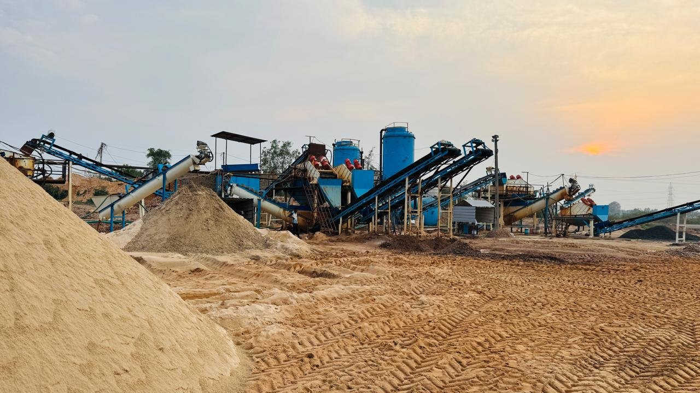
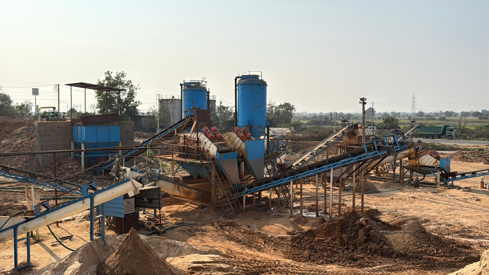
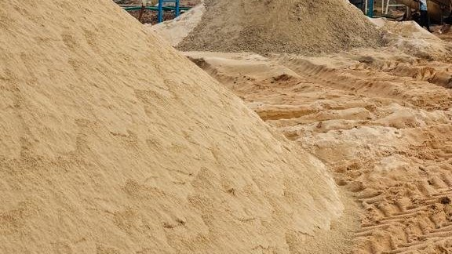
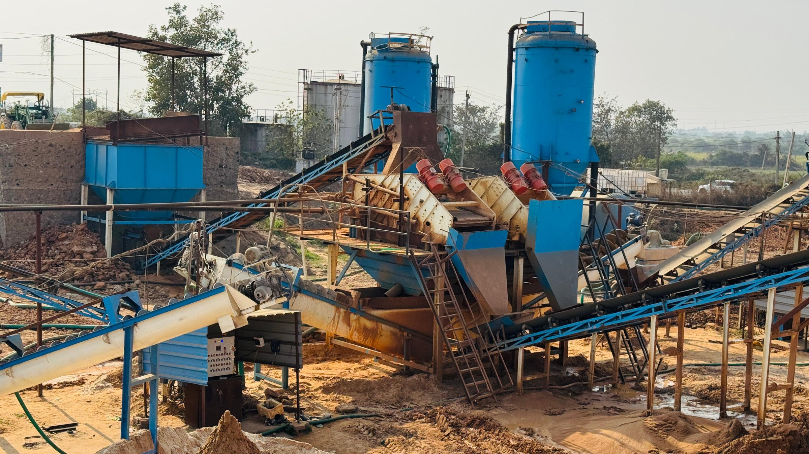
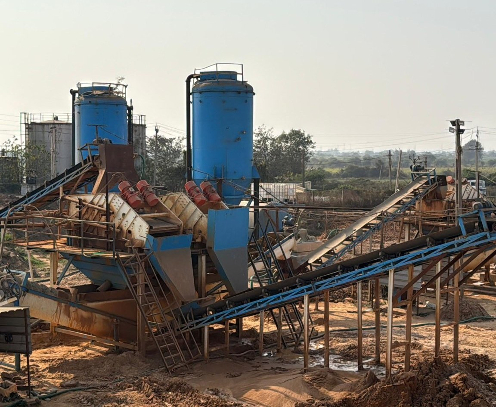
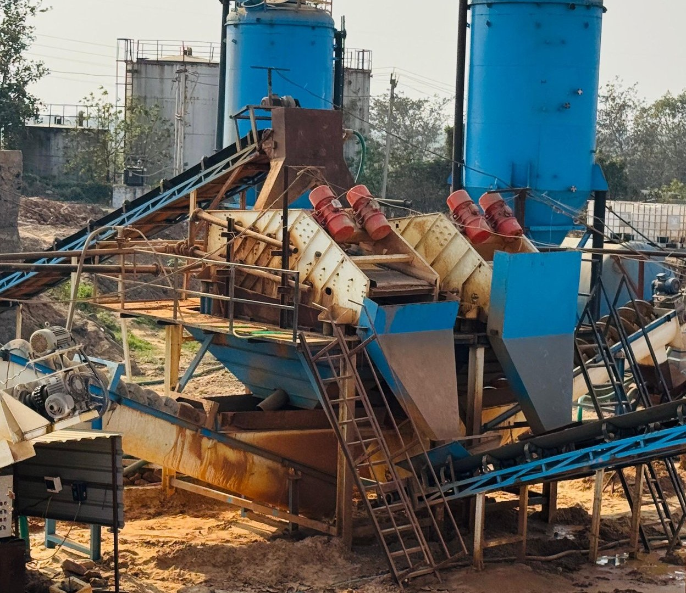
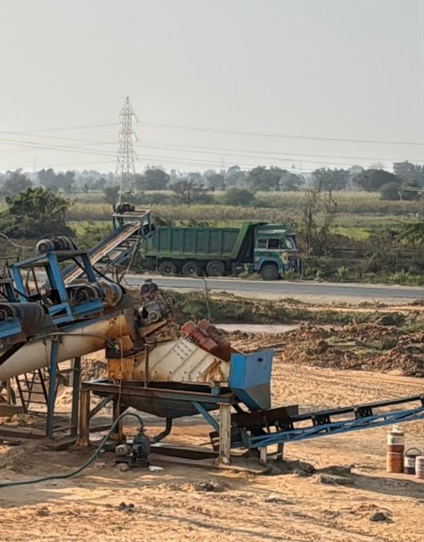
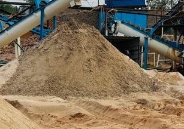
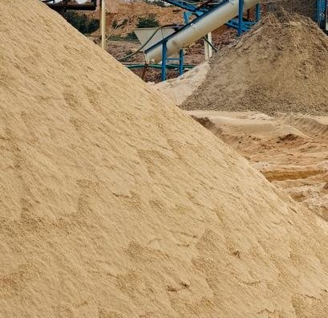

Premium processed silica sand solutions engineered for demanding industrial applications — from investment casting to construction.
At Joyous Mineral, we are committed to delivering high-quality, precision-processed silica sand to meet the diverse demands of investment casting, foundry, tiles manufacturing, and construction industries.
With a focus on innovation, quality, and customer satisfaction, Joyous Mineral has established itself as a trusted name in silica sand processing.



We source our premium raw materials directly from GMDC grounds, ensuring that every grain of sand meets high standards of purity, grain size, and composition.
Our processing techniques refine, classify and prepare sand for demanding industrial applications.



Directly sourced from GMDC grounds — the foundation of every batch we process.
Removing impurities using water and controlled dosing to lift the raw material to a consistent baseline.
Processed through a dryer machine to bring moisture content down to application-ready levels.
Screening and classification ensure every batch meets a precise, consistent particle size.
Ready for dispatch through transportation trucks, direct from plant to site.

Product 01The sand granule is generally thicker and bigger in size. It is used in general-purpose concrete mixes to create strong bonds and fill voids while balancing workability.

Product 02The mainstream product is smaller and very fine grained, approximately 0.6mm to 0.15mm, helping achieve a smooth surface structure of cast pieces — widely used in casting and foundry applications.
Fine-grained silica sand delivering a smooth surface finish for precision cast components.
Consistent classification suited to demanding foundry moulding requirements.
Processed sand supporting consistent body composition in tile production.
Reliable, workable sand for general-purpose concrete and building applications.
“To be an industry leader in sand processing, leveraging advanced technology and sustainable practices to drive innovation and growth across construction and industrial sectors globally.”
“To deliver premium-quality, precisely processed sand that meets the stringent requirements of the construction and silica industries, ensuring operational efficiency and customer satisfaction.”
Send a message with your requirement and location — Priyam or Jayendra Bhai will get back to you directly.
Talk to Joyous Mineral about your silica sand requirements.